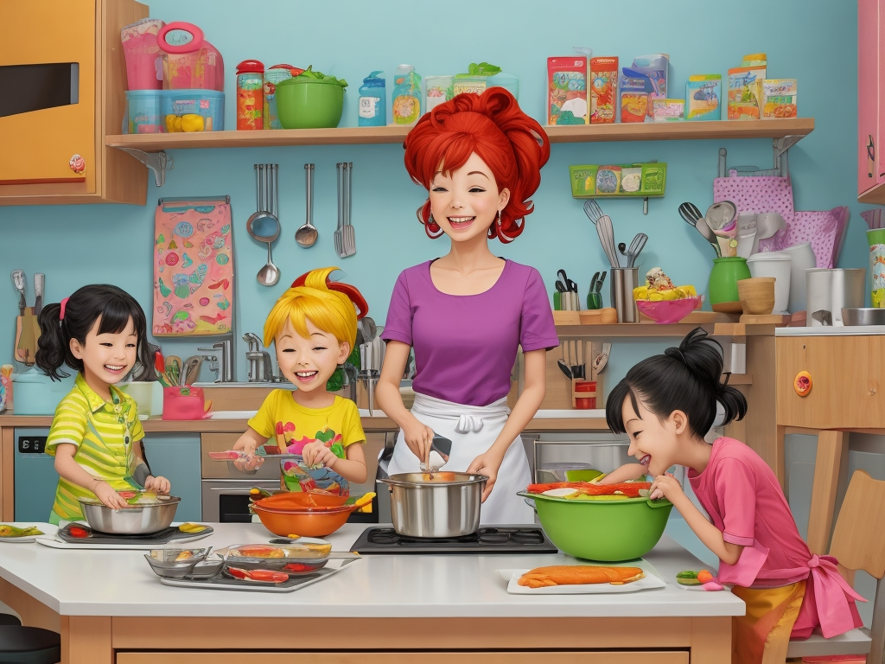

In the colorful village of Veggieland, there lived a young onion named Oliver. He was plump and round, with layers of papery skin that emitted a strong aroma whenever he was nearby. Despite his nutritional value, the children in the village tended to avoid him, preferring the sweeter fruits and vegetables instead.
One sunny afternoon, as the children played in the village square, their voices carried through the air along with their laughter and chatter. Among them was Timmy, a young boy with a curious palate.
"I'm tired of eating the same old snacks every day," Timmy complained, wrinkling his nose at the thought of onions.
"Yeah, me too. Onions smell funny and taste weird," his friend Sarah agreed.

Unbeknownst to the children, Timmy's mother, Mrs. Thompson, overheard their conversation as she tended to her garden nearby. Concerned that her son and his friends were missing out on the nutritional benefits of onions, she decided to intervene.
With a basket full of freshly harvested onions in hand, Mrs. Thompson approached the children with a warm smile.
"Hello, kids! I couldn't help but overhear your conversation about onions," she said cheerfully.
The children turned to her, their faces lighting up at the sight of the basket.
"We don't like onions, Mrs. Thompson. They smell funny," Timmy explained.
Mrs. Thompson nodded understandingly. "I know onions can have a strong smell, but did you know that they're like little protectors for our bodies?"
Curious, the children leaned in as Mrs. Thompson began to explain.
"Imagine your body is a castle, and onions are the knights guarding it," she said. "Onions have special powers that help keep the bad guys away, like fighting off sneaky germs that try to invade our bodies."
The children's eyes widened with interest as they listened to Mrs. Thompson's explanation.
"But that's not all," Mrs. Thompson continued. "Onions are also like magical potions that make our hearts strong and our minds sharp."
As she spoke, Mrs. Thompson held up an onion, gesturing to its layers. "Just like how a superhero wears layers of armor, onions have layers of goodness that protect our bodies from harm."
With that, Mrs. Thompson invited the children to join her in the kitchen to whip up some tasty onion snacks. Together, they sliced the onions into rings, dipped them in a crispy batter, and fried them to perfection, creating crunchy onion rings that made their mouths water.
Next, they caramelized some onions in a pan until they turned golden brown and sweet as candy. Mrs. Thompson layered them between slices of bread with cheese to make irresistible caramelized onion sandwiches.
As the children eagerly sampled the onion snacks, their taste buds tingled with delight. They couldn't believe how delicious onions could be when prepared with care and creativity.
"These are amazing, Mrs. Thompson!" Timmy exclaimed, licking his fingers.
"I never knew onions could taste so good!" Sarah chimed in, reaching for another onion ring.
Mrs. Thompson smiled with satisfaction, knowing that she had successfully introduced the children to the wonderful world of onions.
From that day on, the children of Veggieland embraced onions as a delicious and nutritious addition to their meals, thanks to the culinary magic of Mrs. Thompson and her onion snacks. And Oliver the Onion couldn't have been happier knowing that he was finally appreciated for the nutritious and delicious vegetable that he was.